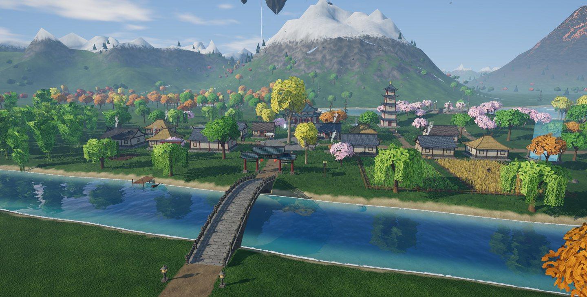
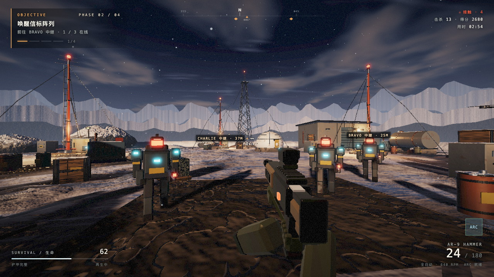
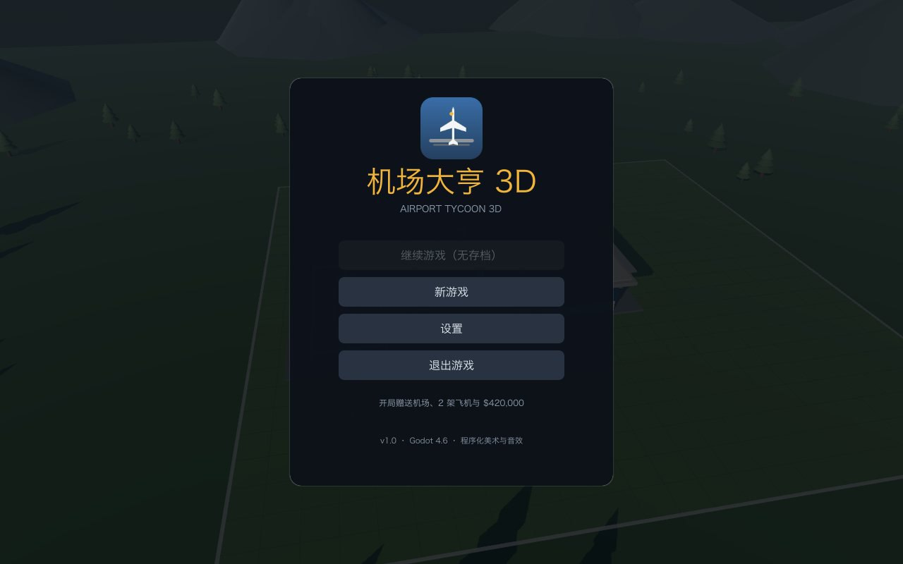
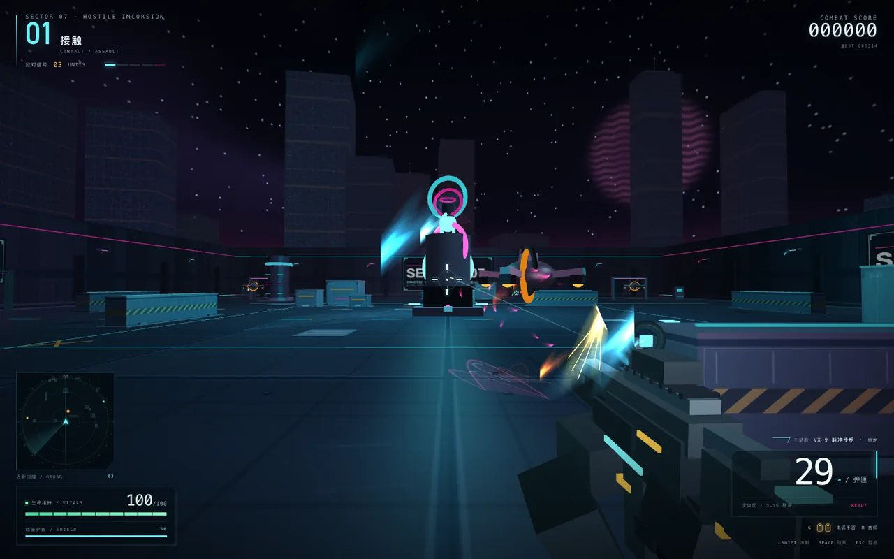
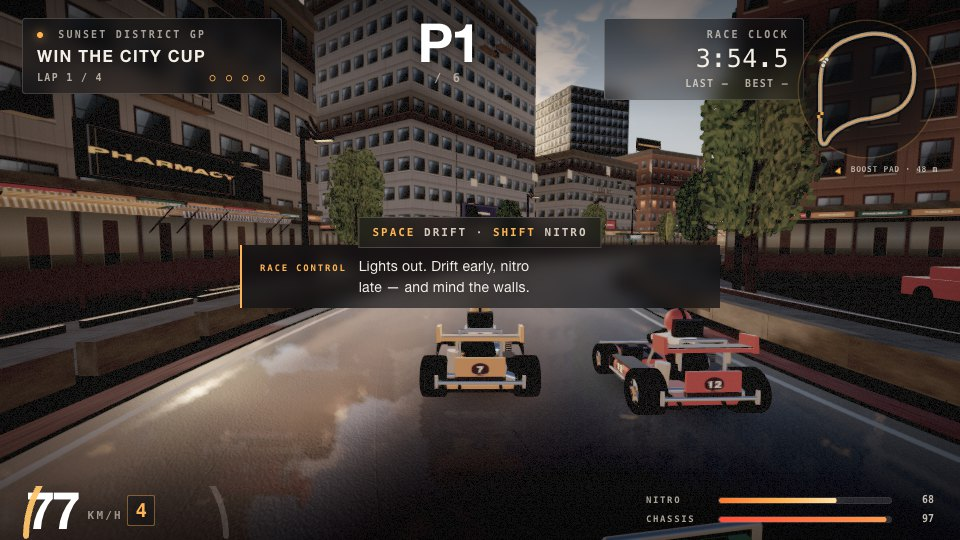

Portfolio / 2026AI usage research
AI usage research.
I study how AI is actually used: agent workflows, browser games and models running on hardware I own. The focus is the gap between a demo and something that holds up.
- Agent systems
- Browser 3D
- Local inference
- Product experiments
Selected experiments
All experimentsThese are not game-development portfolio pieces. Each one is a technical probe: how far can an LLM carry a real production pipeline — generated assets, code, UI, audio, verification and deployment — and where does a human still have to intervene?

Open world · Xianxia
青云渡 Qingyun Crossing / 修仙开放世界
A 3D cultivation world in a browser tab: eight regions, sword flight, tribulation and a seven-chapter main line.
ModelFable 5.2 + Opus 5.5 · three.js

Cinematic VN · Browser
零号信标 ECHO ZERO / 蓝光游戏
A future-noir visual novel about memory, signal and a city that forgets.
ModelDeepSeek Flash + MiniMax H3 + added voice
Tactics · Browser 3D
烽火三国 Beacon of the Three Kingdoms
A 12 × 9 tactics slice with 47 generals, weather, fire and a complete battle loop.
ModelDeepSeek Flash + MiniMax H3

FPS · Harnessed
BLACK ICE 白夜站 / Arctic FPS
An arctic outpost FPS with four enemy roles, a boss, relays and a complete shell.
ModelPhotoreal-game skill · 8/8 gates
Also / 08 more + 2 skills
All experiments

No-Blender baseline
↗
雾谷农庄
DeepSeek Flash · one prompt

Blender pipeline
↗
拾穗 · Harvest
Blender + DeepSeek Flash · 39 props

Desktop · no web export
↗
机场大亨 3D
DeepSeek Flash + DSH · Godot

No-harness control
↗
NEON BREACH
DeepSeek V4.1 Flash · pure API

No skill · city kart
↗
落日环线
Sundown Circuit · 3 laps

Skill · city kart
↗
SUNSET DISTRICT
4 laps · 636 draw calls

Three builds
↗
明宫三维
1.6-bit · original · Fable 5.2

3D management
↗
仙宗 · Immortal Sect
DeepSeek Flash · 7 disciples
8gates
Skill / game harness
↗
Photoreal Game Harness
Eight gates from first light to a shipped 3D build.
书n2g
Skill / extraction pipeline
↗
Chinese Novel to Game
Ten stages from a novel TXT to an evidence-checked build.
Coding & tooling
All experimentsThe other half of the experiment: tools that make model work inspectable, local-first and repeatable. Built with the same loop as the games, without the game.
Agent harness / Python
MiniDSH
A Python reimplementation of DSH's layers: tools, approvals, sessions, subagents, skills, goals and PTC. MockModel by default.
ModelNot recorded · Python 3.9+ · zero core deps
Open the lab Desktop app / ElectronNorMark
A macOS Markdown reader and editor with CodeMirror, live preview, workspaces, PDF export and focus modes.
ModelNot recorded
Read the build Tooling / Rustsensorium
A terminal hardware monitor: CPU, GPU, memory, fans, power and disks read straight from /proc, /sys and NVML, with no child processes.
ModelDeepSeek Flash · 4–6% of one core
Read the build Spatial tool / Three.jsRoomTessera 3D
Floor plan to editable 3D apartment: wall recognition, furniture, materials, measurement and local saves.
ModelDeepSeek Flash
Read the build Tooling / TypeScriptdsh-quota
Route-aware quota and spend state for DeepSeek Harness: plan remaining, API balance or a local ledger, selected by model route.
ModelDeepSeek V4.1 Flash
Read the buildResearch areas
Full profile01
AI systems & agents
Agent workflows, RAG, tool use, evals and local inference.
02
Product experiments
TypeScript, React, Node, Python and static-first deployment.
03
Spatial interfaces
Three.js, WebGL, Godot and game UI that carries information.
04
Local infrastructure
Linux, CUDA, Docker and local GPU workflows.
05
Research & writing
Benchmarks, data analysis and technical notes with caveats.
06
Interface design
Typography, hierarchy and interaction, built in code.
Local environment
LocalTwo machines, one local-first workflow
A portable Mac for making, a used-parts workstation for local inference, and a deliberately small model bench. The hardware and runtime are part of the research setup, not a procurement flex.
- MacBook Pro
- Apple silicon · 48 GB unified · 1 TB
- Workstation
- 2 × Xeon E5-2696 v4 · 2 × RTX 2080 Ti (22 GB each) · 94 GB DDR4
- Runtime
- vLLM · Qwen3.8-27B-FP8 · 256K context · 180 W cap
- Good at
- Embeddings, classification, local drafts and small LoRA runs.
2 × Xeon E5-2696 v4 · 44C / 88T2 × RTX 2080 Ti · 22 GBNVLink NV2 · 2 × 25.78 GB/s94 GB DDR4
Open source
All contributionsStrata / 43k+ ★
Multi-GPU measurements on old cards
Five upstream PRs on layer split vs one card, batch concurrency and vLLM, measured on 2× 2080 Ti 22 GB over a dual-socket Xeon.
Read the contributionProject Maya / 2.8k+ ★
Client discovery + a 128K report
Exposed context and output limits in /v1/models; reported Maya-XS DeepSeek-V4.1-Flash at 128K on the same pair.
Competitions
All resultsWriting
All notesWriting is AI-drafted · Sources and review: Norwin Yu
SystemsThe model does not think it is ugly14 min
SystemsTurning a novel into evidence11 min
SystemsOne skill, eight gates9 min
SystemsThe same harness, a second genre9 min
SystemsBlender is an asset compiler9 min
SystemsEight gates, 318 KB8 min
SystemsTwo Taihe Halls8 min
EvaluationThe exam as evaluation9 min
SystemsThree minutes per restart10 min
Systems80 and 469 min